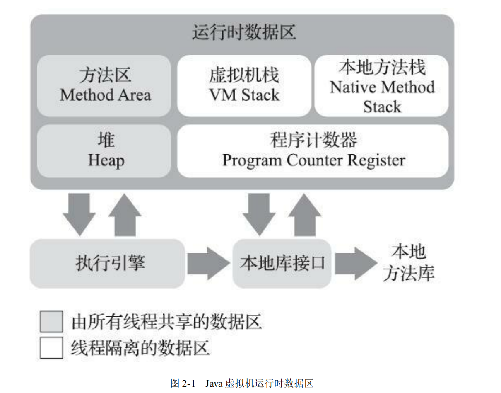
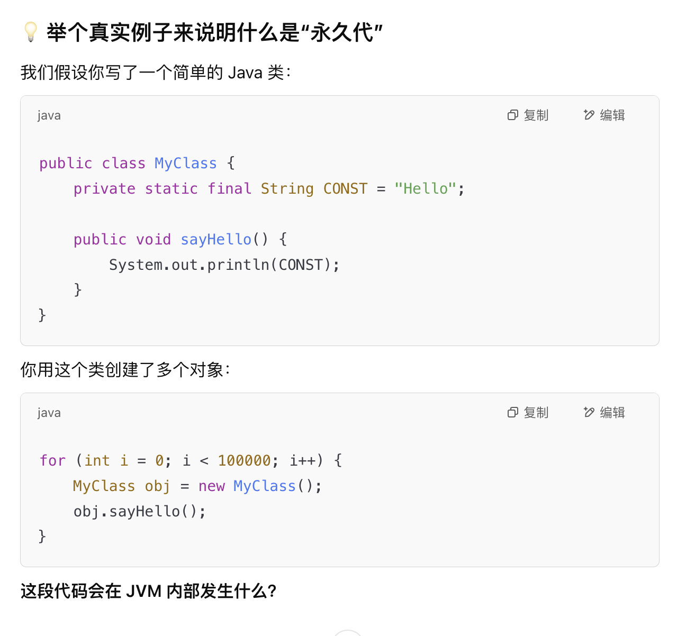
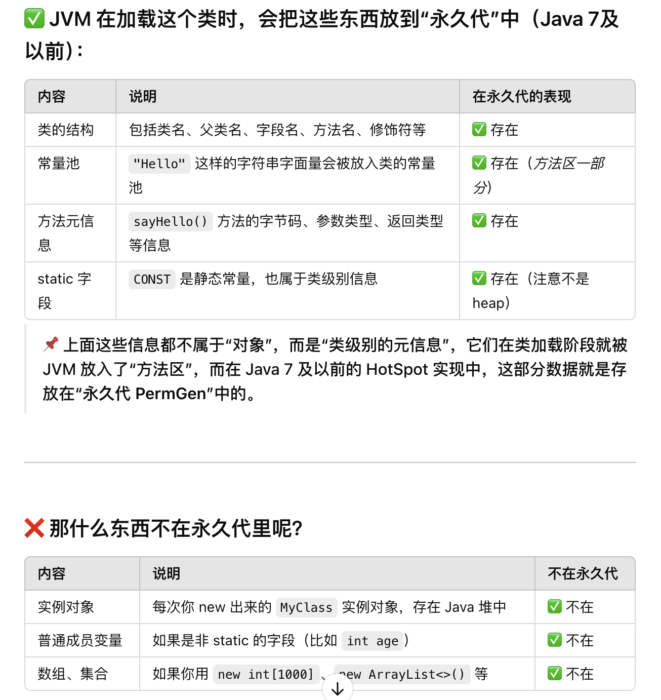
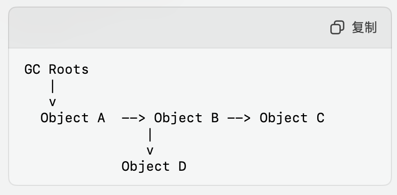
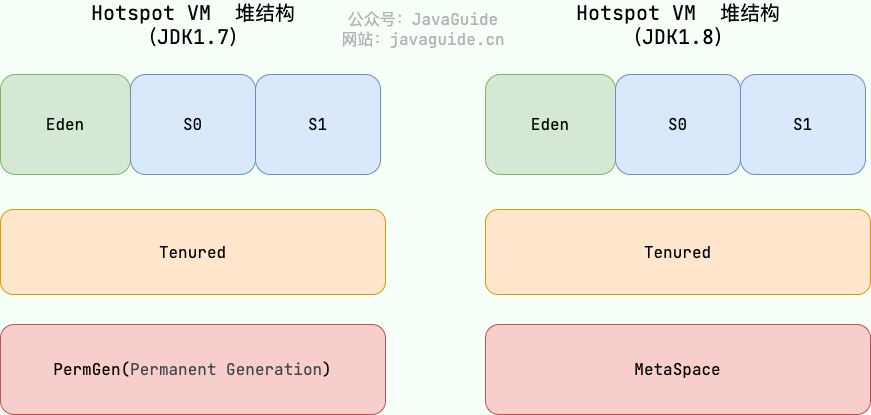

内存与垃圾回收
GC Introduce
首先是 JVM 中的内存分布区域与 GC 关系最为紧密的部分是 堆 和 方法区

触发GC的条件是什么
- 内存不足时 JVM检测到堆内存不足的时候，就会自动触发GC
- 手动请求，可以利用
System.gc()或者Runtime.getRuntime().gc()进行建议 JVM 进行垃圾回收 -> 是建议并不会立即执行 - JVM 参数的设置
- 对象数量或者内存占用达到阈值的时候
JVM中的内存组成
JVM 中的 runtime data areas有些是创建在 JVM 启动的时候，并且只在 JVM 销毁的时候才会销毁。但是有些又是在 JVM 的运行的线程中创建的，这些线程在 JVM 运行的时候就会创建，而在线程结束的时候就会销毁。
JVM 中的堆
- 主要的储存对象 : 对象实例 和 数组 （所有动态内存分配等对象都是储存在堆中）
-
是 GC管理的主要区域，几乎所有的Java对象都在这里分配内存
- 分成 新生代 和 老生代
-
堆上其实还有 句柄池 和 实例池，目的是方便对象的访问定位，我们在句柄池中存放的是到对象实例数据的指针，还有到对象的实例信息的指针。前者指向的是 堆内的实例池中该对象的对象实例信息，后者指向的是 方法区中该对象的类型数据。
JVM 中的方法区
- 用于储存 类信息、常量、静态变量、即时编译器编译后的代码等数据
在 HotSpot 虚拟机中对应的是元空间,元空间也受到GC管理，但是回收频率和方式与堆不同
方法区 和 永久代(元空间) 的区别是什么？我认为它们之间的区别其实可以看成是 类与接口 的区别，类是接口的实现。在这里也是一样 方法区可以看成是接口 永久代和元空间可以看成是类
为什么JVM要移除 PermGen(永久代) ?
有以下的几个原因:
1.(容量固定，难以调优) JVM 本身的内存占据大小就是有限的，这会导致 PermGen 的大小也是有限的，如果我们不断的加载类，那么就会导致 PermGen 的大小不够用，从而导致 OOM 的问题。我们将其放置在 本地内存空间的优点就是，尽可能的不会受到JVM内存大小的限制
- 永久代如果存放在JVM中，会对 GC 的回收效率产生比较大的影响
- (跨平台较差) JDK 8 合并JVM的时候，
JRockit中并没有永久代，所以为了统一规范，所以将永久代移除了


JVM 线程中的本地方法栈
这个就是跟
native相关了
虚拟机使用到的 native 方法服务，比如 JNI，这个就是在本地方法栈中进行的。
JVM 中的栈 (虚拟机栈)
它的生命周期是随线程的建立与销毁的
- 是每个线程独有的，存放局部变量表、操作数栈、动态链接等信息
- 不属于 GC 管理的主要部分，因为栈帧随方法的进入和退出自动清理
- 它是线程方法调用的重头戏，主要就是一个函数栈帧，在调用函数的时候，就会往栈中压入一个栈帧，函数调用结束的时候，就会弹出栈帧。
线程中的 JVM 虚拟机栈其实是由多个栈帧组成的:
- 局部变量表 -> 存放的是各种数据类型 和 对象引用
- 操作数栈
-
动态链接
什么是 动态链接呢 ？ 主要的服务对象是 一个方法需要调用其他的方法的时候，Class 文件的常量池中保存了大量的符号引用比如方法引用的符号引用。当一个方法要引用其他的方法的时候，需要将常量池中指向方法的符号引用转化为其在内存地址中的直接引用。其实简单来说就是让方法引用可以直接的找到对应的方法的内存地址。
-
方法返回地址
Java 方法中的两种结束方法的方式:
- 直接正常的
return结束方法 -
抛出异常结束方法
-
stackOverFlowError: 栈溢出 OutOfMemoryError: 内存溢出
PC
它的生命周期是随线程的建立与销毁的
与GC无关 每个线程中都有一个 PC 寄存器，用来储存线程所执行的字节码的行号指示器
我们看上图，可以发现的是 堆 和 方法区 两个都是所有线程共享的，而 栈 和 PC 是每个线程独有的。
上述是几种内存的组成，但是在 JDK1.7 和 JDK1.8 之间发生了 一些变化， 方法区 变成了 元空间，并且 元空间和运行时常量池被 移动到 本地内存
字符串常量池
目的: JVM 为了提升性能和减少内存消耗 针对 字符串专门开辟的一块区域，主要的目的是为了防止字符串的重复创建。
GC 的基本原理
因为Java的JVMGC是自动进行垃圾回收的，那么很自然的一个想法就是，我们如何知道一个对象是不是垃圾呢？那么接下来就是介绍一下 GC是如何判定对象是否存活
堆中的内存分配
在 JDK7 即之前，其实堆中分为了三种:
Young Generation: 新生代Old Generation: 老年代Perm Generation: 永久代
值得注意的是，在JDK 1.8 之后，PermGen(永久代)被 MetaSpace取代了，变成了元空间，元空间使用的是本地内存
对象是否存活的判定
对象不能被任何情况进行引用，那么就说明这个对象已经死亡了
1. 引用计数法
我们给每个对象添加一个引用计数器，用来统计这个对象被引用的次数。当引用次数为 0 的时候，就进行回收。看起来是一种比较理想的办法，但是有一种特殊情况是 循环引用，这种情况下，两个对象互相引用，但是引用次数都不为 0，这样就会导致内存泄漏。
下面就是一个例子:
1 2 3 4 5 6 7 8 9 10 11 12 13 14 15 16 17 18 19 20 21 22 23 24 25 | |
A 和 B 互相持有了两个对象的引用。但是没有别的地方引用，它们的引用计数一直是 1，就导致系统无法判断两个对象是否应该被回收，从而造成了内存泄漏。
2. 可达性分析法
可达性分析法是 Java 垃圾回收机制中用来判断哪些对象是可回收的一个重要的算法，它是现代垃圾回收器中使用的主要垃圾回收算法之一。
其实这个思路很简单，算法的本质就是建立有向图，从 GC Roots 开始，遍历所有的对象，如果一个对象没有被任何引用指向，那么这个对象就是垃圾对象。这个算法就是 可达性分析法。接下来我们进行具体的介绍。
- 建立有向图
- 从 GC Roots 对象开始 BFS / DFS 遍历
- 垃圾回收
可达性分析的具体过程如下:
-
Step1 : 确定 GC Roots
GC Roots 主要包括:
- 栈中的局部变量 正在执行的线程中的栈帧的局部变量和方法参数
- 静态字段 : 类加载器的类的静态字段的引用对象
- JNI 引用 : 由本地代码创建的引用，指的是 Java 与其他语言的交互机制，允许在 Java 代码中调用本地方法 (主要是防止如果本地代码通过JNI持有了Java对象，但是 JNI 本身并没有直接参与JVM的垃圾回收机制，那么这部分引用可能会导致GC无法正确识别这些对象是否仍然被使用)
- 活跃的线程 : 仍然存活的线程
-
Step2 : 遍历对象图
从 GC Roots 开始遍历图，逐个标记所有可达到的对象。在这个过程中，我们会把所有的对象都标记为 可达对象，而没有被标记的对象就是 垃圾对象。
-
如何判定一个对象是否可达？
引用链: 通过对对象引用链的分析，检查该对象是否能够通过一系列引用路径被 GC ROOTs 访问到。
根对象: 所有可达对象都可以追溯到 GC Roots，如果一个对象不能被 GC Roots 访问到，那么它就是不可达的。其实两个是一样的意思。
-
-
Step3 : 垃圾回收
在标记完成之后，我们就可以进行垃圾回收了。我们会把所有的 垃圾对象 进行回收，释放内存空间。

上面就是一个可达性图分析的例子，我们很自然的可以看到，上面的引用计数法中提到的 循环引用 的反例就会被有向图给识别出来，因为没有别的对象对它俩进行引用。属于是不可达的，因此我们可以把它们标记为垃圾对象。
当然，这个算法也是有优缺点的 :
- 优点 :
- 准确率高，只会标记真正不可达的对象，不会漏掉任何一个对象
- 处理复杂的引用关系, 可以避免出现的上述环形引用的问题
- 缺点 :
- 效率低，因为需要遍历所有的对象，所以时间复杂度是 O(n)
- 需要更多的内存空间，因为需要记录所有的对象的引用关系，所以需要更多的内存空间
常见的垃圾回收算法
标记-清除算法(Mark-Sweep)
- 过程 : 就像上面所说的一样，我们标记所有存活的对象 -> 清除所有未标记的对象。
- 优点: 是实现简单，标记和清除过程都是可以分离的独立过程。
- 缺点: 缺点也很明显，就是会出现比较多的内存碎片，导致内存的利用率降低，同时也会导致 GC 的效率降低。
标记-整理算法(Mark-Compact)
-
过程 : 标记所有存活的对象 -> 将所有存活的对象向一端移动 -> 清除所有未标记的对象。
-
优点 : 其实也就是把存活的对象都移动到堆的另一端，从而释放掉对象之间的空闲内存。我们可以通过这种方式，避免了上面的标记-清除算法中出现的可能过多的内存碎片的问题。
-
缺点 : 需要额外的对象移动开销。就是一个 trade-off 的问题。
复制算法(Copying)
- 过程 : 我们把内存分成大小相等的两块，只使用其中的一块，回收时候，将存活的对象复制到另一块中，然后清除掉原来的内存块。
- 优点 : 没有内存碎片，分配效率高
- 缺点 : 缺点也很明显，可用的内存减半，同时大量的内存copy开销
分代收集算法
主要的思想其实很简单，就是一生一策。根据对象存活时间不同的特点，分成 新生代 和 老生代
- 新生代 就是那些存活率比较低的对象，不会长时间存活的
- 老生代 存放长期存活对象，存活率比较高
那么对于不同的生代，我们就可以选用不同的回收算法来进行处理。
-
新生代 : 一般使用 复制算法，因为新生代的对象存活率比较低，所以我们可以通过复制算法来进行回收，同时也可以避免内存碎片的问题。
-
老生代 : 一般使用 标记-整理算法，因为老生代的对象存活率比较高，所以我们可以通过标记-整理算法来进行回收，同时也可以避免内存碎片的问题。
堆中的年龄机制
首先我们看下图:

首先，我们可以看到上面分为了三种，分别是 Eden,Tenured,PermGen 区域。我们在创建任何对象的时候，都是优先在 Eden 区域进行分配。
在完成了一次新生代垃圾回收之后，如果对象还存活着，那么他们的年龄就会+1 这个是 Java GC中的核心概念之一。
- S0 和 S1 的默认年龄就是1
-
当年龄增长到
15的时候，就会晋升到 老年代中为什么默认是 15? 因为
15 = 0'b1111是一个比较好的选择，因为这样的话，我们可以通过 位运算 来进行判断，而不需要进行比较操作。
动态年龄判断
虽然我们设置了最大的年龄阈值 15,但其实真实的 GC机制 中，我们采取了一个新的算法来作为年龄的判断。
HotPot 对于 survivors 区内的所有存活的对象，按照年龄进行排序，然后对它们的大小进行累加，如果占据空间的大小超过了 survivors 区的一半，那么这个年龄就会晋升到老年代中。我们会对当前的 age 和 15 取 min 来作为晋升老年代的年龄阈值.
(重点) Java对象创建的过程
-
类加载检测 : 虚拟机遇到一条
new指令的时候。首先将去检查这个指令的参数是否能在常量池中定位到这个类的符号引用。并且检查这个符号引用代表的类是否已经被加载、解析和初始化过。如果没有，那么必须先执行相应的类加载过程。 -
分配内存 : 在通过类加载检测的时候，就比如存在这个构造函数，那么虚拟机就会为新生对象分配内存。分配的方式有两种，一种是 指针碰撞，一种是 空闲列表。
- 指针碰撞: 这个比较好理解，其实就是在内存中分配一个指针，把用过的内存都堆到一边，我们只会在没有使用过的内存中开辟空间。
适用范围是堆内存比较工整的情况下，也就是没有很多内存碎片的时候。 使用该分配方式的GC收集器:Serial,ParNew
- 空闲列表: 这个就是在内存中维护一个空闲列表，记录着哪些内存是可以使用的，哪些是不可以使用的。
这个就很好理解，其实用一个链表来维护哪些空闲的内存是可以分配的. 使用该分配方式的GC收集器:CMS
具体的 堆上的内存是否工整，其实取决于我们 GC 中使用的算法是什么。
-
初始化零值，虚拟机需要将分配到的内存空间都进行初始化为零值，（不包括对象头），这样我们就可以保证了对象的实例对象字段在 Java的代码中不用初始化赋值就可以直接使用。
-
设置对象头 对象头是很有必要的，它的作用就是只有知道这个对象是哪个类的实例、如何才能找到类的元数据信息，对象的哈希码、、、这些信息都存储在对象头中。
-
执行init方法，根据程序员的意愿进行初始化操作。其实也就是根据构造函数进行初始化操作。
那么问题来了，我们在创建对象的时候也需要线程安全，这个是怎么做到的呢？
- 乐观锁来进行实现，我们使用 CAS+失败重试 的算法来进行实现
- TLAB，我们为每一个线程单独的在
Eden区域预先分配一块内存，这样就可以在一定程度上避免线程安全问题。我们优先在 每个线程中预留的Eden区域里进行创建对象。
内存分配与回收原则
对象在进行分配的时候，都会优先在该线程中的 Eden 区域进行分配，如果 Eden 区域没有足够的空间进行分配，那么就会触发一次 Minor GC。
- 因为内存空间不足够来分配了，那么我们就会使用一次 Minor GC 来对新生代对象进行回收，这样就可以释放出一些空间来进行分配。
大的对象 会优先进入老年代，比如数组，字符串等。因为如果放在了新生代，那么就会有比较频繁的 Minor GC，这样就会导致效率的降低，性能会很低，而且花销也会比较大。我们在创建数组字符串的时候，通常会默认放在老年代中，因为他们也不太容易很快就被回收。
那么你知道分配担保么？
空间的分配担保的目的是 为了确保在 Minor GC之前，老年代本身还有容纳新生代所有对象的剩余空间。
简单来说，就是在进行 Minor GC 的时候，我们会先检查老年代的最大可用连续空间是否大于新生代所有对象的总空间，如果大于，那么就可以进行 Minor GC,可以如果当前新生代中的岁数都足够大了，那么在进行了一次 Minor GC 之后就可以晋升到老年代了。否则就会进行检查我们的 -XX:HandlePromotionFailure 参数，是否允许担保失败，如果允许就可以 会继续检查老年代的最大可用连续空间是否大于历次晋升老年代对象的平均大小，如果大于，那么就可以进行 Minor GC.但其实这次是有风险的，我们只是和期望进行比较，而不是真正的进行比较，所以可能会出现一些问题。如果小于，或者不允许，我们就会进行 Full GC